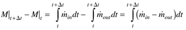

| [ Team LiB ] |
|
2.2 Balance EquationsIn this text, we are interested in dynamic balances that have the form This equation is deceptively simple because there may be many in and out terms, particularly for component balances. The in and out terms would then include the generation and conversion of species by chemical reaction, respectively. The rate of mass accumulation in a system has the form dM/dt, where M is the total mass in the system. Similarly, the rate of energy accumulation has the form dE/dt, where E is the total energy in a system. If Ni is used to represent the moles of component i in a system, then dNi/dt represents the molar rate of accumulation of component i in the system. When solving a problem, it is important to specify what is meant by system. In some cases the system may be microscopic in nature (a differential element, for example), while in other cases it may be macroscopic in nature (the liquid content of a mixing tank, for example). Also, when developing a dynamic model we can take one of two general viewpoints. One viewpoint is based on an integral balance, while the other is based on an instantaneous balance. Integral balances are particularly useful when developing models for distributed parameter systems, which result in partial differential equations; the focus in this text is on ordinary differential equation-based models. Another viewpoint is the instantaneous balance where the time rate of change is written directly. Integral BalancesAn integral balance is developed by viewing a system at two different "snapshots" in time. Consider a finite time interval, Dt, and perform a material balance over that time interval, The mean-value theorems of integral and differential calculus are then used to reduce the equations to differential equations. For example, consider the system shown in Figure 2-1, where one boundary represents the mass in the system at time t, while the other boundary represents the mass in the system at t + Dt. Figure 2-1. Conceptual material balance problem.An integral balance on the total mass in the system is written in the form Mathematically this is written as  where M represents the total mass in the system, while and represent the mass rates entering and leaving the system, respectively. We can write the right-hand side of Equation (2.1), using the mean-value theorem of integral calculus, as where 0 < a < 1. Substituting the right-hand side of Equation (2.2) into Equation (2.1), we find By dividing Equation (2.3) by Dt, and using the mean value theorem of differential calculus (0 < b < 1) for the left-hand side, and by substituting Equation (2.5) into Equation (2.4), and taking the limit as Dt goes to zero, we find Representing the total mass as M = Vr, as Finrin and as Foutr, where V is the volume, r is the mass density (mass/volume), and F is a volumetric flow rate (volume/time), we obtain the equation Note that we have assumed that the system is perfectly mixed, so that the density of material leaving the system is equal to the density of material in the system (rout = r). Instantaneous BalancesHere we write the dynamic balance equations directly, based on an instantaneous rate-of-change which can also be written as
This is the same result obtained using an integral balance. Although the integral balance takes longer to arrive at the same result as the instantaneous balance method, the integral balance method is probably clearer when developing distributed parameter (partial differential equation-based) models. Steady StateAt steady state, the derivative with respect to time is zero, by definition, so from Equation (2.7), or from Equation (2.8), Steady-state relationships are often used for process design and determination of optimal operating conditions. |
| [ Team LiB ] |
|